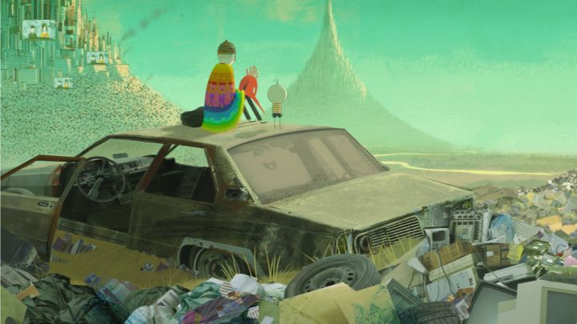

"Boy and the World" is a pretty interesting achievement from Brazil, a film for which the country is rightly proud for. It has a bright color palette and a way of looking at the world in both a real and hopeful gaze. But the film is really just an art piece. It's beautiful to look at, and has an impressively profound message tucked away deep inside, but the ability for that to come across as a feature length story feels outstretched.The story is told with no dialogue, of a young and carefree boy living with his family. One day, the father leaves to the city, leaving him and his mother alone. From the boy's perspective, it is never made clear exactly why the father left, be it for work or other reasons. Regardless, he misses him, and sets off on a grand adventure to find him on his own. Getting side-tracked from one setting to the next, we see the world through the boy's eyes, a large and confusing place not entirely unlike our own, but when seeing its colors and shapes for the first time, it seems full of wonder.It's a nice setup, but also an incredibly vague premise. The opening moments of the movie show what you are getting into: the boy playing across green plants and trees in a nicely arranged camera frame, giving us a peek of his innocence and creativity. The rest of the movie doesn't have much more context then that. There are individual places and a handful of characters the boy meets, but very quickly he moves on, and without dialogue, the movie is open for everyone to enjoy it but for few to connect with it. Rather than the story, one watches for the art style, seemingly drawn with crayons and colored pencils on a white background, with simple but effective stick figures as the characters. It's a brightly colorful world that is universally pretty, even if it doesn't come across as particularly detailed or engaging in its animation. The filmmakers still do a good job within the confines of their style and production funding, and the film's distinct visuals are a great draw. The audio isnt particularly strong, aside from a repeating Brazilian parade track that one might have seen in the trailers. And there is no dialogue, so it's hard to judge something like that.If there is something truly special beyond the cute stick-figure characters, its in the reveal of the ending in the final third or so. This is a major spoiler to even mention, but it is a play of the cycle of life and going with the flow, that the world is one big parade that never ends, and instead, repeats through time. It's a clever conclusion that takes careful precision to craft, and it makes the film worth watching until the end. But then, why did I need to watch for over an hour before getting to the point? As pretty as it is, and as well-suited for young children as it is, I suspect both children and adults would get bored of the style before the halfway point, and there isn't anything significantly engaging in the story to keep someone watching. It's the type of movie you can show on a musuem wall, and people would be happy to stop and watch for a minute, before walking away and assuming they had seen enough to appreciate it. But then you would miss the ending!  "Boy and the World" is a strong example of feature film that would have been better suited for a short film. Yes, making a full movie gives a little more attention and the idea behind might seem to justify the effort, but if a story only has a single idea, its ending, with little else leading up to it other than clues to make sense of that ending, then dragging a viewer for over an hour is simply a bad idea. I've been guilty of this as well in my storytelling, so I sympathize. And apparently, a children's television show loosely based on the art style is in development, which might be an appropriate medium for the work.I still highly recommend trying to watch "Boy and the World" at least once for the art style alone, but I do so knowing most people will never get to the clever ending.
- "Ani" More reviews can be found at : https://2danicritic.github.io/ Previous review: review_Blue_Drop Next review: review_Btooom!